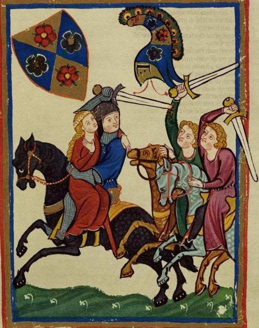

Raum und Initiation
Wie Helden Helden werden
Ob Jason Bourne, James Bond, Achilles, Harry Potter oder Jon Snow, sie alle haben eines gemeinsam: Ist es nicht verwunderlich, dass eine Vielzahl von Heldenfiguren nicht weiß, woher sie kommt?
Das Rätsel um die Herkunft und Abstammung eines Helden scheint ein erfolgreiches Narrativ für Bestseller unterschiedlichster Medien zu sein. Ganze Geschichten drehen sich nur darum, woher ein Held stammt und wo seine außergewöhnlichen Eigenschaften und Fähigkeiten begründet liegen. Im Laufe der Geschichte führt ihr Lebensweg die Helden zurück auf die Spuren ihrer Kindheit. Nach und nach kommen sie ihrer wahren Identität auf die Spur. Dabei scheint nicht nur die Herkunft, sondern gewissermaßen auch der Bruch mit der Herkunft bzw. eine Unterbrechung auf dem Lebensweg integraler Bestandteil eines Heldenbildes zu sein. Was genau also macht den Held zum Helden?
Mein Vorschlag lautet: Räume und Rituale. Frei nach dem Motto ‚Der Weg ist das Ziel‘ müssen wir uns die wichtigen Stationen auf den Lebenswegen der Helden ansehen. Auch die großen Stationen unseres Lebens, die gesellschaftlich als einschneidende biographische Ereignisse begriffen werden, werden heute noch ritualhaft zelebriert. Man denke zum Beispiel an die Taufe, die Einschulung, das Abitur oder die Hochzeit. Dass wir gerade diese Erlebnisse besonders betonen und feiern, liegt daran, dass wir dabei Schwellen überschreiten, uns weiterentwickeln und unser Status sich verändert. Wir haben nicht nur persönlich das Gefühl reifer geworden zu sein, sondern uns wird auch gesellschaftlich ein anderer Status zugeschrieben. Besonders in der Phase der Kindheit und des Erwachsenwerdens finden viele solcher Schwellenüberschreitungen statt, die auch als Initiationen klassifiziert werden können.
Schaut man sich die Romane um 1200, speziell die Gattung des höfischen mittelhochdeutschen Romans an, so stößt man auf eine Vielzahl exorbitanter Heldenfiguren: Besonders Gottfrieds von Straßburg ‚Tristan‘ und Wolframs von Eschenbach ‚Parzival‘ stellen zwei herausragende Heldenfiguren ins Zentrum. Das Spannende an beiden Helden ist, dass wir als Leser ihre Lebenswege von Geburt an begleiten. Wir werden gleichsam zu Zeugen ihrer narrativen (Er-)Zeugung, denn zuvor wird uns bereits die Liebesgeschichte ihrer Eltern erzählt. In Anbetracht der Entstehungszeit der Texte ist eine biographisch so umfassende Heldengestaltung außergewöhnlich.
Die ‚Entgegenreifung‘
Der Romanist Friedrich Wolfzettel (Wolfzettel, 1973) spricht von einer Entgegenreifung des Helden hin zu seiner zukünftigen Aufgabe, die besonders in den Kindheitserzählungen der Helden evident ist, den sogenannten Enfances. Dieser „neue entwicklungsbetonte Erzähltypus“, so Wolfzettel, korrespondiert mit einer aufkommenden Biographisierungstendenz Mitte des 12. Jahrhunderts, die sich bis heute kontinuierlicher Beliebtheit erfreut.
Eine Entgegenreifung bildet sich auch im Schema „Die Geburt des Helden“ (s. Infobox) der Literaturwissenschaftler Pörksen u. Pörksen (Pörksen u. Pörksen, 1980) ab. Ihre Analysen konzentrieren sich auf die Ebene der Handlung. Sie arbeiten auf der Basis zahlreicher literarischer Kindheitsdarstellungen elf Handlungsbausteine heraus, die der prototypische Held während seines Heranwachsens durchlebt. Diese fungieren als Entwicklungsstationen, die eine Figur Schritt für Schritt zum Helden werden lassen.
Das Heranreifen des Helden findet jedoch nicht nur in Form von Handlungsstationen statt, sondern auch durch Bewegung im Raum, im Zuge derer die verschiedenen Stadien wortwörtlich durchlaufen werden. Tristan und Parzival überschreiten als junge, noch kindliche Helden auf ihrem Lebensweg sowohl räumliche Grenzen als auch Schwellen, die von Ritualen begleitet werden.
‚Aufgeladene‘ Räume
Wir nehmen Räume, die uns beim Lesen begegnen, meistens nicht bewusst wahr. Sie sind für uns vielmehr einfach da, als dass wir sie wirklich beachten. Dabei füllen wir sie automatisch mit unserem Weltwissen. Gibt uns ein Erzähler beispielsweise die Information, dass der Protagonist sich in Paris befindet, stellen wir uns womöglich den Eiffelturm, den Louvre und den Charme französischer Bistros vor.
Schwertleite:
Im Mittelalter galt die Schwertleite als „der festliche Akt, durch den ein junger Adliger zum Ritter erklärt wurde“. Im Zentrum der Feierlichkeiten steht die Umgürtung des Schwertes. In der mittelalterlichen Dichtung markiert das Ritual den Eintritt des Jungen ins Erwachsenenalter.Die Tatsache, dass jeder literarische Raum bewusst konstruiert ist, vergisst man beim Lesen oft. Denkt man jedoch an die Gemachtheit literarischer Räume, so ist es nur logisch, dass ihnen eine bedeutungstragende Funktion im Text zukommt. Ein Autor überlegt sich schließlich nicht umsonst, wie es in seiner Textwelt so aussieht. Welche Bedeutung literarische Räume haben können, zeigt die Raumtheorie von Jurij Lotman (Lotman, 1981). Ausgehend von seinem Interesse für die dargestellte Welt innerhalb literarischer Texte, untersucht er vor allem die diesen zugrundeliegende Ordnung. Er geht davon aus, dass die dargestellte Welt literarischer Texte in einzelne Teilräume gegliedert ist, die durch eine unüberwindbare Grenze getrennt sind. Die einzelnen Teilräume sind meist gegensätzlich aufgebaut und haben eine jeweils eigene Ordnung. Zusätzlich sind sie mit kultureller Bedeutung ‚aufgeladen‘. Zum Beispiel werden die räumlichen Gegensätze nah – fern zusätzlich ‚aufgeladen‘ mit den kulturellen Bedeutungen eigen – fremd. Die Bedeutungsanreicherung folgt dabei bestimmten kulturellen Codes und kann deshalb von Kultur zu Kultur unterschiedlich sein.
Innerhalb einer Geschichte sind die Figuren bestimmten Räumen zugehörig, die sie in der Regel nicht verlassen können, da die Grenzen zwischen den Räumen nicht durchlässig sind. Lediglich privilegierte Figuren wie der Held (und seine Helfer) können diese Grenzen überschreiten und setzen damit die Geschichte wesentlich in Gang. Entscheidend ist nämlich, dass mit der Grenzüberschreitung ein enormes Konfliktpotential eröffnet ist: Mit der Grenzüberschreitung werden verschiedene Ordnungen miteinander konfrontiert und dadurch in ihrer Gültigkeit infrage gestellt. Die Grenzüberschreitung macht nicht nur ein räumliches und handlungsbasiertes Voranschreiten im Text sichtbar, sondern eröffnet gleichzeitig die Möglichkeit Entwicklungsfortschritte des Helden zur Darstellung bringen.
Die räumliche Multiplikation der Herkunft
Dass eine privilegierte Figur mehreren Räumen angehören kann, belegt Franziska Hammer (Hammer, 2016) in ihrem Modell der räumlichen Multiplikation der Herkunft, in dem sie aufzeigt, dass die Helden des höfischen Romans ihre heroische Identität über mehrfache räumliche Zuordnung erhalten. Dabei unterscheidet sie einen primären Herkunftsraum von einem sekundären Herkunftsraum. Der primäre Herkunftsraum ist, wie der Name schon verrät, der ursprüngliche Herkunftsraum des Helden, in dem er genealogisch verankert ist. Hier erhält er seine genealogisch vererbten Eigenschaften. Dieser Raum ist als das Eigene codiert – gegensätzlich dazu ist der sekundäre Herkunftsraum codiert, welcher für das Andere, Unhöfische steht. Dabei kann das Andere ein fremder Hof oder die Wildnis sein. Um nun zu verstehen, warum das Zusammenspiel von Held und Raum so wichtig für die Identität des Helden ist, müssen wir uns ansehen, wie er sich im Text bewegt und ihm auf seinem Weg folgen:
Der Weg des Helden: Wo komme ich her und wo gehöre ich hin?
Entscheidend für den Weg und die Entwicklung des Helden sind zwei Grenzüberschreitungen. Die erste Grenzübertretung des Helden ist meist eine unfreiwillige Versetzung aus dem primären in den sekundären Herkunftsraum, beispielsweise durch Adoption oder Entführung. Die unfreiwillige Versetzung führt dazu, dass der Held seine wahre oder vollständige Abkunft nicht erfährt. Dennoch trägt er die Eigenschaften seiner genealogischen Abstammung aus dem primären Herkunftsraum in sich. Hier befindet sich der Held quasi am Nullpunkt seiner eigenen Geschichte. Sein Ziel ist es von nun an, sich seine soziale Position zurück zu erkämpfen oder sie gar erst herauszufinden.
Während er im sekundären Herkunftsraum aufwächst und sich Eigenschaften dieses Raumes aneignet, treten allmählich seine genealogischen Merkmale aus dem primären Herkunftsraum (wieder) hervor. Daraufhin fällt er zum ersten Mal auf, zum Beispiel bei seinem ersten richtigen Kampf. Es ist sozusagen sein erster großer Auftritt, der sein Helden-Dasein ankündigt. Zugleich leitet er die zweite wichtige Grenzüberschreitung auf seinem Weg ein: die Rückkehr in seinen ursprünglichen, primären Herkunftsraum. Im Jugendalter nähert er sich allmählich seinem Zuhause an, ohne es zu wissen. Nach der Ankunft in der Heimat erhält er nach und nach Informationen über seine Herkunft, Abstammung und Bestimmung. Die Annäherung und Rückkehr an den Ort seiner genealogischen Herkunft (es können auch zwei sein, diejenige von Mutter und Vater) erfolgt in einem sukzessiven Prozess des Voranschreitens, der verschiedene Stationen beinhaltet.
Das Wissen um die Herkunft reicht für den Helden jedoch noch nicht aus, um seinen Platz in der Gesellschaft zu finden. Dazu benötigt er eine Gruppenzugehörigkeit, denn die Menschen im Mittelalter werden über ihre Standesposition und ihre gesellschaftliche Verortung definiert. Der ‚Platz in der Gesellschaft‘ ist wie der Begriff schon sagt, häufig räumlich gedacht. Man kann aber nicht nur auf räumlichem Weg die Grenze zu einer Gruppe überschreiten und ihr zugehörig werden, sondern auch in Form von…
…Initiation und Ritual
Der Begriff der Initiation stammt aus der Ethnologie und bezeichnet in erster Linie ein gesellschaftliches Phänomen, weshalb verschiedene Bedeutungsaspekte darin verborgen liegen. Allen gemein ist jedoch das Eintreten oder Eingegliedert-Werden in eine Gemeinschaft. Der Moment des Übertretens, welcher oft von Ritualen oder ritualhaften Handlungen begleitet ist, steht dabei im Fokus. Was bei der räumlichen Grenzüberschreitung das konkrete Passieren der Grenze ist, ist hier vielmehr als abstrakter Prozess einer Schwellenüberschreitung zu verstehen. Diese kann sich auf persönlicher, religiöser oder gesellschaftlicher Ebene vollziehen.
Das zentrale Element jeder Initiation ist der Statuswechsel, der sich mit dem Überschreiten der Schwelle vollzieht. Im Verlauf des Initiationsprozesses finden Ablösungs- und Angliederungsprozesse statt, die anzeigen, dass der Initiand einen Statuswechsel durchläuft. Klingt kompliziert, ist aber im Grunde ganz einfach: Beispiel Hochzeit. Die Nacht vor der Zeremonie schläft das Paar traditionell getrennt, beide kleiden sich neu ein und ‚putzen sich heraus‘ – machen sich quasi auch äußerlich bereit für den neuen Lebensabschnitt. Im Fall der Heirat gehen beide Initianden aus diesem Prozess als (gesellschaftlich) Veränderte hervor, sie sind nun nicht mehr ledig, sondern verheiratet. Ein anderes Beispiel ist die Krönung oder, besonders wichtig für die Helden der höfischen Romane, die Schwertleite (s. Infobox).
Der Ethnologe Arnold van Gennep (van Gennep, 2005) bezeichnet solche Initiationen als Übergangsriten. Im Begriff des Übergangs steckt bereits ein Verweis darauf, dass es sich um einen sukzessiven Prozess handelt. Innerhalb dieses Prozesses fungiert das Ritual als Transgressionsmarker, durch den ein Statuswechsel markiert wird. Das Eingliedern in eine Gemeinschaft, das mit dem Begriff der Initiation verbunden ist, braucht selbstverständlich eine Gemeinschaft, in die der Initiand eintreten kann. Im Mittelalter, in dem der Einzelne über seine Position innerhalb eines Gruppensystems definiert ist, sind Initiationsrituale deshalb von zentraler Bedeutung. Denn, wenn Gruppenzugehörigkeit existentiell ist, ist der Eintritt in eine Gruppe von enormer Bedeutung. Folglich wird das Eintreten auch deutlich markiert und zelebriert.
Wir halten fest: Der zukünftige Held durchlebt auf seinem Weg durch die Textwelt verschiedene Initiationen und Rituale. Die Texte zeigen ihre Helden immer wieder in Ablösungs- und Angliederungsprozessen. Der Status der Figuren verändert sich sukzessiv, indem diese Grenzen überschreiten und Schwellenphasen durchleben. Auf diese Weise nähern sie sich dem vom Text für sie vorgegebenen Status eines Helden an.
Blicken wir noch einmal zurück auf die elf Stationen, die nach Pörksen u. Pörksen zur „Geburt des Helden“ führen. Bei den einzelnen Handlungsbausteinen handelt es sich um einschneidende Ereignisse im Leben der Helden, welche zusätzlich von räumlichen Bewegungen begleitet werden. Wenn sich Helden zwischen den einzelnen Teilräumen bewegen, überwinden sie Grenzen, die nur sie und ihre Helfer überhaupt überschreiten können. Tun sie das, so wird das Überschreiten der Grenze oftmals von einem Ritual oder einer Initiation begleitet.
Sehen wir uns beispielsweise Tristan an: Seine Eltern, die von hoher Abkunft sind, zeugen ihn im Verborgenen und sterben bereits kurz nach seiner Geburt. Der verwaiste Säugling wird wiederum heimlich adoptiert und wächst beim ehemaligen Marschall seines Vaters auf, was nicht seinem Stand entspricht. Im Kindesalter wird er von Kaufleuten entführt und ausgesetzt. So gelangt er zufällig an den Hof seines Onkels Marke, den er jedoch nicht als solchen identifizieren kann, da er nicht weiß, dass er adoptiert ist. Am Hof seines Onkels klärt sich die bis dato verschleierte Herkunft des Helden auf und Tristan hat nun seinen Platz in der Gesellschaft gefunden, was mit der Schwertleite untermauert wird. Auf seinem beschwerlichen Weg zum Hof hat er sich zugleich diverse Überlebensqualitäten angeeignet, die er von nun an für sich nutzt.
Auch an Harry Potter oder Jon Snow lassen sich diese Stationen aufzeigen. Um eine Spoilergefahr möglichst zu vermeiden, kurz zu Harry: Auch er ist von besonderer Abkunft, verwaist und wächst die ersten Jahre seiner Kindheit in einer nicht standesgemäßen Umgebung auf, nämlich als Zauberer in der Welt der ‚Normalen‘. Er weiß nichts über seine besondere Herkunft, bis er nach Hogwarts ‚versetzt‘ wird. Erst als er weiß, wer er ist und woher er stammt, gelingt es ihm einen angemessenen Platz in der Gesellschaft zu finden.
Durchschaut man diese Stationen der Heldenwerdung, ertappt man sich dabei, sie überall zu entdecken: Sei es in der letztens gelesenen Freizeitlektüre, dem neulich erschienen Blockbuster, der Lieblingsserie oder dem Helden aus Kindertagen. Probiert es selbst!
Diese Struktur, das Zusammenspiel von Raum und Initiation, ist epochen- und genreunabhängig zu finden. Sie erscheint damit als universell für jede Art von Literatur, die einen Helden in ihr Zentrum stellt. Sei es Harry Potter, James Bond oder Game of Thrones-Held Jon Snow.
Das wirft abschließend die Frage auf: Sind alle Helden gleich? Ich würde sagen: Sie sind nicht gleich – aber ihre narrative Erzeugung basiert auf denselben narrativen Grundstrukturen. Sie bewegen sich über Grenzen hinweg durch die Welt des Textes. Ihr Weg ist strukturiert über Initiationen, die sich vornehmlich durch Ablösungs- und Angliederungsprozesse an der Textoberfläche zeigen. Ihr Weg ist gleichermaßen ihr Ziel und lässt sie zu dem werden, was sie sind: Helden.